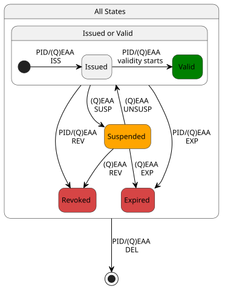
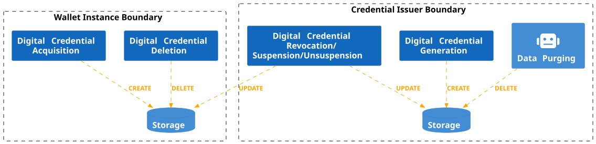

Wallet Instance and Digital Credential Lifecycle¶
The Credential Issuer is responsible for creating and issuing Digital Credentials, as well as managing their lifecycle and validity status.
The Authentic Source is the entity responsible for the management and provisioning of User's attributes to Credential Issuers. There is a relationship between the lifecycle of the attributes managed by the Authentic Source and the Digital Credential lifecycle managed by the Credential Issuer. Indeed, one of the reasons for revocation or suspension of Digital Credentials is the update/revocation or suspension of the attributes contained in the Digital Credential. In IT Wallet, the provisioning of User's attributes and the notification of updates or changes in the state of the attributes are exchanged using the PDND infrastructure (see relative sections for more details).
The Wallet Provider is in charge of the implementation and provision of Wallet Instances also handling their entire lifecycle.
In this section, state machines are presented to explain the Wallet Instance and Digital Credential states and their transitions and relations.
Note
PID is specialized Digital Credential type that produces impacts on the Wallet Instance's lifecycle. The revocation of the PID MAY also have potential impacts on (Q)EAAs, if these was issued using the presentation of the PID. When the distinction between PID and (Q)EAA is not needed, the term Digital Credential is used.
Note
In the current version of EIDAS-ARF, two types of attestations have been introduced: Wallet Trust Evidence (WTE) and Wallet Instance Attestation (WIA). The first to prove that the keys used for key binding of Digital Credentials reside in a trustworthy WSCD, the second to prove that the Wallet Instance is authentic. In this technical specification, a single attestation (Wallet Attestation) is used as proof of both the Wallet Instance authenticity and WSCD trustworthiness. The future version of this specification will be updated accordingly.
Wallet Instance¶
As shown in Fig. 2, the Wallet Instance has four distinct states: Installed, Operational, Valid, and Uninstalled. Each state represents a specific functional status and determines the actions that can be performed.

Fig. 2 Wallet Instance Lifecycle.¶
Note
The Wallet Provider MUST ensure the security and reliability of the Wallet Instances. To achieve this, the Wallet Provider MUST periodically checks the Wallet Instances security and compliance status.
Note
The Wallet Attestation is short-lived. It MUST be automatically re-issued before its expiration time. For this reason, the Wallet Instance expiration transition is not considered in Fig. 2.
Transition to Installed¶
The state machine begins with the Wallet Instance installation (WI INST) transition, where Users download and install a Wallet Instance provided by the Wallet Provider using the official app store of their device's operating system (this ensures authenticity via system checks), leading to the Installed state.
When the state is Installed, the Wallet Instance MUST interact only with the Wallet Provider to be activated. When the revocation of the Wallet Instance occurs, the Wallet Instance MUST go back from Operational or Valid to Installed. The revocation marks the Wallet Cryptographic Hardware Key, registered during activation (see “Transition to Operational” section), as not usable anymore. Revocation can occur in the following cases:
for technical security reasons (e.g., relating to the compromise of cryptographic material);
in case of explicit User requests (e.g., due to loss, theft of the Wallet Instance);
death of the User;
illegal activities reported by Judicial or Supervisory Bodies.
Note
While for the ARF the revocation of the Wallet Instance is accomplished by revoking the Wallet Attestation (see Topic 9 and Topic 38 in Annex 2), in this specification the revocation is managed differently. Being the Wallet Attestation short-lived, it does not have a status management mechanism. For this reason, the Wallet Instance revocation transition is accomplished by deleting the Wallet Cryptographic Hardware Key from the WSCD of the Wallet Instance and from the account associated with the User. This transition is completed when the Wallet Instance is online.
Transition to Operational¶
After installation, the User opens the Wallet Instance and an activation begins (WI ACT). At this stage, a User account MUST be created with the Wallet Provider and associated with the Wallet Instance through the Wallet Cryptographic Hardware Key Tag, subject to obtaining the User's consent (see the “Wallet Instance Initialization and Registration” section for more details). This association allows the User to directly request Wallet Instance revocation from the Wallet Provider, and it also allows the Wallet Provider to revoke the Wallet Instance associated with that User.
Note
As a result of the User account creation, an authentication mechanism MUST be set for the User to interact with the Wallet Provider portal. This specification mandates the use of at least a second-factor for User authentication.
As part of the activation, the Wallet Provider MUST evaluate the operating system and general technical capabilities of the device to check compliance with the technical and security requirements, and the authenticity and integrity of the installed Wallet Instance. Upon successful verification, the Wallet Provider MUST issue at least one valid Wallet Attestation to the Wallet Instance, therefore the Wallet Instance enters the Operational state.
In addition, if not already done, Users MUST set their preferred method of unlocking their Wallet Instance; this MAY be accomplished by entering a personal identification number (PIN) or by utilizing biometric authentication, such as fingerprint or facial recognition, according to personal preferences and device's capabilities. Please refer to Wallet Attestation.
In the Operational state, Users can request the issuance of PID (PID ISS) or (Q)EAAs if the PID is not required in the issuance ((Q)EEA ISS). In addition, if the Digital Credentials are (Q)EEAs and for the presentation they do not require the PID, they can be presented without transitioning the Wallet Instance to another state ((Q)EEA PRE transition).
A Valid Wallet Instance MUST transition back to the Operational state due to PID EXP/REV/DEL transition, when the associated PID expires, or is revoked by its Provider or either deleted by the User.
Transition to Valid¶
A transition to the Valid state occurs only when the Wallet Instance obtains a valid PID (PID ISS). In this state, Users can obtain and present new (Q)EAAs ((Q)EAA ISS/PRE), and present the PID (PID PRE). Please refer to PID/(Q)EAA Issuance and Relying Party Solution.
Note
Users can have only one Wallet Instance in Valid state for the same Wallet Solution. Thus, when a User installs and obtains a PID on a new Wallet Instance of the same Wallet Solution from the same Wallet Provider, the PID in the previous Wallet Instance MUST be revoked and the Wallet Instance became Operational.
Transition to Uninstalled¶
Across all states, Installed, Actived, Operational, or Valid, the Wallet Instance can be removed entirely through the Wallet Instance uninstall (WI UNINST) transition, leading to the Uninstalled state. If a Wallet Instance is Uninstalled it ends its lifecycle.
Lifecycle Management¶
While Fig. 2 shows the different states a Wallet Instance may acquire during its lifecycle, Fig. 3 shows the point of view of Wallet Instances and Wallet Providers in managing the Wallet Instance lifecycle and the effect on their local storage.

Fig. 3 Wallet Instance Lifecycle Management.¶
Through a Wallet Instance in an Installed state, a User is able to start the Wallet Instance Activation (WI ACT). As a result, the Wallet Instance MUST create a Wallet Cryptographic Hardware Key pair. In addition, if not already done, Users MUST set their preferred method of unlocking their Wallet Instance. As a result of the Wallet Instance Revocation (WI REV), the Wallet Instance MUST delete the Wallet Cryptographic Hardware Key pairs.
A Wallet Provider instead is responsible for:
Wallet Instance Activation (WI ACT): a User account MUST be created and associated with the Wallet Instance through the Wallet Cryptographic Hardware Key Tag. As a result of the User account creation, an authentication mechanism of at least two factors MUST be set for the User to interact with the Wallet Provider portal.
Wallet Instance Revocation (WI REV): for technical security reasons or triggered by external entities (e.g., Users and Supervisory Bodies) the Wallet Cryptographic Hardware Key Tag MUST be deleted from the User account.
Data Purging: through an explicit request of Users, the User account at the Wallet Provider MUST be removed from the local storage.
Digital Credential¶
Fig. 4 shows the states and transitions for Digital Credentials. It includes four distinct states: Issued, Valid, Expired, and Revoked. While, in case of (Q)EAAs there is an additional state: Suspended. A Digital Credential in all states can be deleted (PID/(Q)EAA DEL) and this ends its lifecycle.

Fig. 4 Digital Credential Lifecycle.¶
Note
Users MAY present a Digital Credential in any state, it is up to the Relying Party's policy to accept a not Valid Digital Credential. An example of this scenario is when a Relying Party needs to verify that the User is not a minor. In this case, even if the User presents an Issued/Expired/Revoked or Suspended Digital Credential, the age claim is still reliable.
Note
While Issued, Valid, Expired, Revoked are explicitly mentioned in the ARF (see Figure 5 of ARF v1.4), Suspended is implicitly present in EIDAS-ARF. This specification explicitly considers it.
Transition to Issued¶
For the state machine to start, the Wallet Instance MUST be in either the Operational or Valid state, enabling Digital Credentials to be issued to it. The state machine begins with the Issued state, when an issuance process is triggered and, as a result, a Digital Credential is issued to the Wallet Instance (PID/(Q)EAA ISS). Please refer to PID/(Q)EAA Issuance.
Transition to Valid¶
A Digital Credential changes to Valid state when:
it reaches its start date of validity;
an unsuspension process is triggered if the (Q)EAA has been suspended.
Transition to Expired¶
A Digital Credential naturally transitions to the Expired state when it automatically expires upon reaching its end date of validity (PID/(Q)EAA EXP), indicating they are no longer valid for use.
If a Digital Credential is Expired the Wallet Instance SHOULD notify the User the Digital Credential has expired and the User MAY delete it (PID/(Q)EAA DEL). This ends its lifecycle.
Transition to Revoked¶
A Digital Credential changes from Issued, Valid or Suspended states to Revoked state when it is actively revoked by the Credential Issuer by a revocation process (PID/(Q)EAA REV). The Relying Parties SHOULD no longer consider usable a particular Digital Credential when it is Revoked, even though it is still valid temporally and contains a valid Credential Issuer signature. Revocation can occur in the following cases:
for technical security reasons relating to the compromise of cryptographic material;
in case of explicit User requests;
as a consequence of an attribute update by Authentic Sources;
in case of a revocation of the attributes contained in the Digital Credential notified by the Authentic Source;
death of the User;
revocation of Wallet Instance to which the Digital Credential was issued;
illegal activities of the User reported by Judicial or Supervisory Bodies.
In the case of PID only, the following cases are in addition to those listed above:
detection of a breach of the digital identity issued by an Identity Provider and used to authenticate the User during the PID Issuance;
as a result of obtaining a new PID on a new Wallet Instance from the same Wallet Provider that has provided the Wallet Instance containing a PID previously issued.
Note
A (Q)EAA Provider MAY revoke a (Q)EAA in case of PID revocation.
When a Digital Credential is Revoked it cannot transition back to Valid, the Wallet Instance SHOULD notify the User the Digital Credential has been revoked and the User MAY delete it (PID/(Q)EAA DEL). This ends its lifecycle.
Transition to Suspended¶
A (Q)EAA changes from Issued or Valid states to Suspended state when it is suspended by the Credential Issuer ((Q)EAA SUSP). The (Q)EAA remains Suspended until it is restored to the Issued or Valid state ((Q)EAA UNSUSP) depending on the previous state, i.e. the conditions leading to its suspension are resolved, or it changes in Revoked, Expired or it is deleted. The suspension of a (Q)EAA MAY be:
Use case driven, based on the validity status of the attributes contained in the (Q)EAA. In this case, an Authentic Source MUST notify the Credential Issuer of any changes in the state of the attributes attested by the (Q)EAA.
Explicitly requested by the User.
Lifecycle Management¶
While Fig. 4 shows the different states a Digital Credential may acquire during its lifecycle, Fig. 5 shows the point of view of Wallet Instances and Credential Issuers in managing the Digital Credential lifecycle and the effect on their local storage.

Fig. 5 Digital Credential Lifecycle Management.¶
A User, through the Wallet Instance, is able to acquire a new Digital Credential (Credential Acquisition) performing the PID/(Q)EAA ISS process. This MUST result in the storage of a Digital Credential in the Issued/Valid state, and delete it when it is not needed anymore or it is Expired/Revoked (Credential Deletion). Until the Credential Deletion, a Digital Credential can be presented to Relying Parties, this operation will not affect its lifecycle.
A Credential Issuer instead is responsible for:
Digital Credential Generation: the Digital Credential is generated as a consequence of an issuance request and MUST be added to the local storage of the Credential Issuer after the successful issuance.
Digital Credential Revocation/Suspension/Unsuspension (PID/(Q)EAA REV and (Q)EAA SUSP/UNSUSP): for technical security reasons or triggered by external entities (e.g., Users and Authentic Sources) the Digital Credential state MUST be locally updated.
Data Purging: after reaching the Expired state, and based on the Credential Issuer retention policies, Digital Credentials MUST be removed from the local storage of the Credential Issuer.